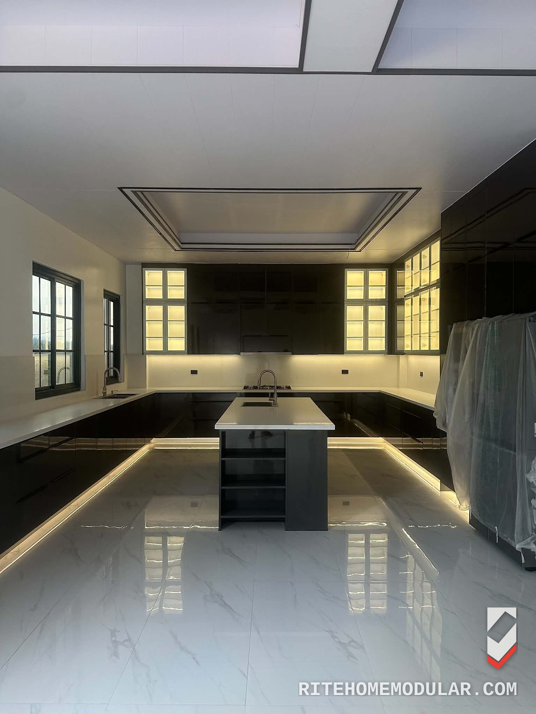

Sealed · Edge-banded · Termite-treated — built to last.
Home/Kitchen Cabinets
Kitchen Systems · Cagayan de Oro
CDO kitchen cabinetry, drawn and quantified before a single board is cut. Whether it's one run of cabinets or a full kitchen renovation, the crew that draws it is the crew that installs it.

The same standard runs through every system we build in Cagayan de Oro — this is what changes when the drawing comes before the price.
01
Every board treated against termites before assembly — not brushed on after the fact.
02
18 mm board throughout, every exposed edge closed with edgebanding — no raw core left open to moisture.
03
Elevations and a full bill of quantities, approved by you, before a board goes on the saw.
04
Every panel, edge and hardware line priced and listed — no lump-sum guessing.
05
Fabricated in our own workshop and installed by the same crew — nothing handed off to a subcontractor.
A sample of completed installations in and around Cagayan de Oro.
Every job — kitchen, storage, partition or workstation — moves through the same tracked sequence. A ₱5,000 design deposit opens the drawing stage and is credited against your down payment.
01
Site visit, room and budget discussed, a schedule agreed.
02
Site measured, elevations drawn, revisions logged until you approve the sheet.
03
Boards, edging, hardware and accessories bought against the approved quantities.
04
Cut and assembled in our workshop to the approved drawing — not on your floor.
05
Set in place by our own crew, checked against the drawing before handover.
Yes — kitchen cabinets are our core line. Every run is measured on site, drawn to the millimetre, itemised board by board, and installed in Cagayan de Oro by our own crew, not a subcontractor.
Yes. A CDO kitchen renovation with Ritehome runs through the same five tracked stages as any job — consultation, design, procurement, fabrication and installation — with the drawing and quantities approved before demolition or fabrication starts.
Gloss, matte, woodgrain or solid-colour board, all on the same four-face carcass system, so the finish changes without changing the structure underneath.
It depends on the specification tier — Essential, Premium or Executive — agreed line by line against your drawing. A ₱5,000 design deposit opens the drawing stage and is credited against your down payment, so you see the itemised quantity list before committing to a figure.
Yes. Every board is treated against termites before assembly, and every exposed edge is closed with edgebanding — the two things that actually stop termites and moisture getting into a kitchen cabinet, done before the cabinet exists, not after.
One drawing office, one crew, four systems — explore the rest of what we build in Cagayan de Oro.
Tell us the room and where you are in Cagayan de Oro. A site visit is arranged from there, and the drawing follows the visit.